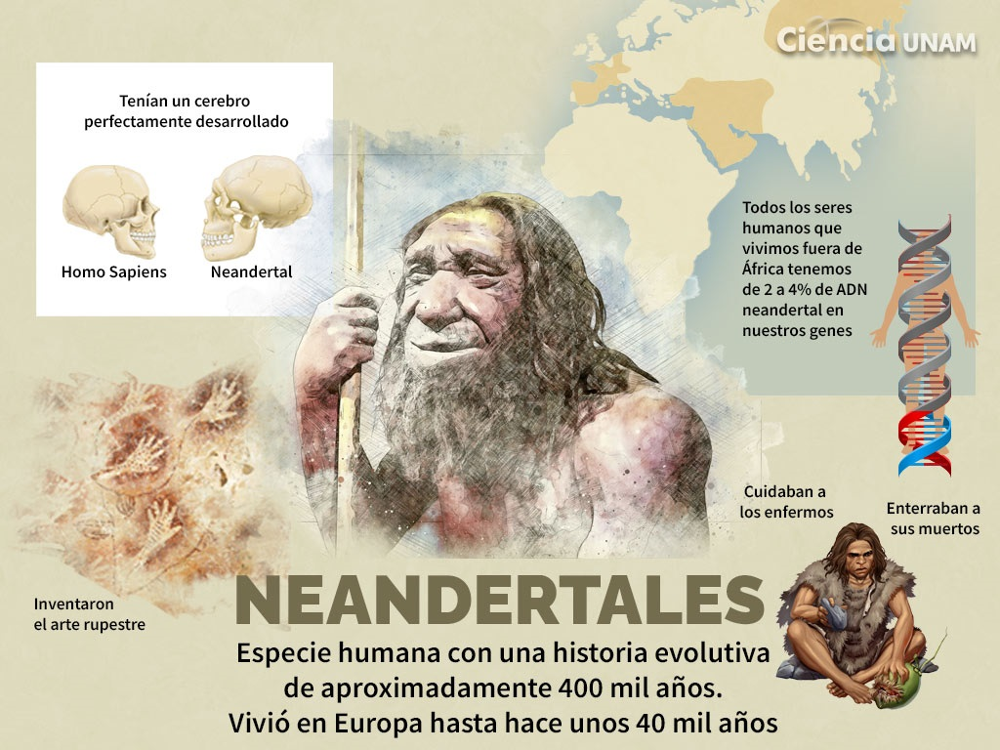

Adaptación al entorno
Ambas especies desarrollaron herramientas y estrategias para vivir en ambientes exigentes.
Durante miles de años, Homo sapiens y neandertales compartieron territorios, recursos y parte de su historia.
Los Homo sapiens convivieron con los neandertales durante miles de años. Los estudios científicos muestran que ambos grupos llegaron a tener descendencia.
Por eso, muchas personas actuales conservan un pequeño porcentaje de ADN neandertal. Este descubrimiento nos recuerda que la evolución humana fue una historia de encuentros y mezclas, no una simple línea recta.
← Volver al inicio

Ambas especies desarrollaron herramientas y estrategias para vivir en ambientes exigentes.

La cooperación y la transmisión de conocimientos fueron claves para la supervivencia humana.